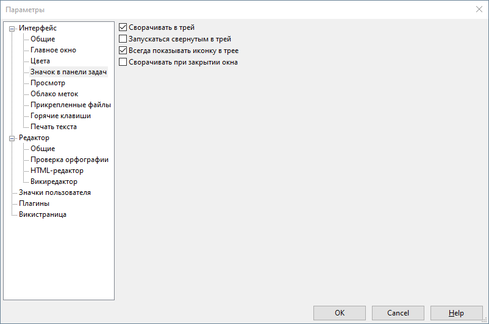

Интерфейс - Значок в панели задач

Настройки в этом разделе предназначены для установки поведения иконки программы в системном трее (области со значками рядом с часами под Windows).
Если установлен флажок Сворачивать в трей, то при нажатии кнопки "Свернуть" главного окна, OutWiker не будет отображаться на панели задач, но появится значок в трее. Такое поведение удобно в тех случаях, когда программа у вас запущена бо́льшую часть времени.
Флажок Запускаться свернутым в трей указывает программе, что при ее запуске нужно сразу скрыть главное окно. Это может быть удобно в тех случаях, если OutWiker у вас запускается из автозагрузки при старте операционной системы.
Флажок Всегда показывать иконку в трее указывает программе, что данная иконка должна быть видна всегда, а не только когда программа находится в свернутом состоянии.
Если установлен флажок Сворачивать при закрытии окна, то при нажатии кнопки закрытия главного окна программа не будет завершаться, а только лишь сворачиваться. Для выхода из программы нужно будет использовать пункт меню Файл - Выход...